A study of why Vision Language Models recognize actions in long videos but struggle to localize them in time, and whether action detection can help.
Vision Language Models (VLMs) increasingly serve as unified architectures for video understanding, yet recent studies show they fail at temporal reasoning even on tasks designed to measure it. The failure is one of temporal localization, not semantic understanding: VLMs recognize actions but cannot determine when they occur.
We propose a hybrid pipeline that uses temporal action detection (TAD) proposals to guide VLM reasoning on long untrimmed videos: ActionFormer (within OpenTAD) generates candidate segments, which a VLM (Qwen3-VL) labels for semantic and composite activity inference.
We evaluate on Toyota Smarthome Untrimmed (TSU), where all prior work is TAD-only, making ours the first VLM baseline on TSU. VLMs correctly identify activity threads but hallucinate temporal structure, motivating the hybrid design. The pipeline redistributes performance rather than producing a clear win: it trades the TAD baseline's high recall for higher precision at roughly equivalent F1, filtering redundant detections without recovering more ground-truth actions. Our analysis localizes why: failure concentrates in rare, fine-grained action classes rather than scaling with video length or complexity. The contribution is thus a first baseline and a diagnostic framework that directs future work toward rare-class detection and temporal-boundary refinement.
Many real-world video applications share a common structure: a stationary camera records a long, continuous stream in which multiple actions compose into higher-level activities. Surveillance systems, industrial monitors, and smart-home cameras all require recovering full event timelines, not classifying single short clips.
VLMs are increasingly adopted as unified architectures for such tasks, yet a growing body of work shows they fail at temporal reasoning, with benchmarks reporting near-chance performance on temporal ordering even when shuffling the input frames barely changes the result. Recent analyses pinpoint the bottleneck as temporal localization, not semantic understanding: VLMs recognize actions but cannot determine when they occur. (We review this evidence in detail in Related Work.)
Pure VLMs fail at temporal localization; pure TAD lacks semantic flexibility. No prior study has tested whether combining them resolves each other's weaknesses on long-form daily activity videos with dense hierarchical annotations. Our key contributions:
We study the temporal-localisation gap from two angles. We first establish two independent baselines chosen to represent the opposite ends of the design space: a dedicated temporal action detector, which localises precisely but is restricted to a fixed label set, and a pure Vision Language Model, which is semantically flexible but weak at temporal grounding. We deliberately pick one model from each paradigm so that the hybrid can be measured against both, only then can we tell whether fusing them resolves each other's weaknesses rather than simply inheriting the stronger one. We then build a hybrid pipeline that fuses the two.
TSU[8] provides 536 long untrimmed daily-activity videos (average duration of 21 min) from fixed cameras in a real apartment, with dense annotations for 51 activity classes at 25 fps. We use the Cross-Subject (CS) protocol (subject-disjoint with no train/test overlap). We produce a derived ActivityNet-style annotation JSON with timestamps in seconds for compatibility with OpenTAD.
We pick ActionFormer[6] as our temporal action detection
baseline because it is a strong, widely used single-stage detector with native support in
OpenTAD[7]. We train it from scratch on the TSU Cross-Subject
split using frozen CLIP[11] ViT-B/32 features (one frame every
0.64 s, one 512-dimensional vector per snippet), which compresses a 20-minute video into
roughly 1,900 vectors. ActionFormer reads the whole sequence at once and outputs candidate
segments, each with a start time, end time, one of the 51 TSU labels, and a confidence score.
Because TSU ships no OpenTAD configuration, we wrote one reusing OpenTAD's
ThumosPaddingDataset class (the same path as Multi-THUMOS) and left the
architecture, loss, and post-processing at OpenTAD defaults. Full training hyperparameters are
listed in the Appendix (Table A1).
We pick Qwen3-VL-8B[10] as our VLM baseline because it is a strong, open-weights video LLM that fits our hardware (2× NVIDIA V100), letting us probe the semantic side without proprietary-API constraints. Because the full video cannot fit within the VRAM and token budget, each video is split into one-minute windows, sampling 35 frames per window (one frame every ~1.7 s). To enable automatic comparison with the ground truth, the model is prompted to return a structured JSON timeline of activity segments with global frame indices rather than free-form text; an embedded frame map tells it which real timestamp each frame corresponds to.
The hybrid pipeline combines the temporal precision of a dedicated action detector with the semantic flexibility of a Vision-Language Model. Rather than asking the VLM to reason over an entire 21-minute video, a setting where temporal grounding is known to fail, we use ActionFormer's proposals as a basis, restricting each VLM query to a short and well-localised clip. This design directly addresses the bottleneck identified in prior work: VLMs recognise actions but struggle with when they occur.
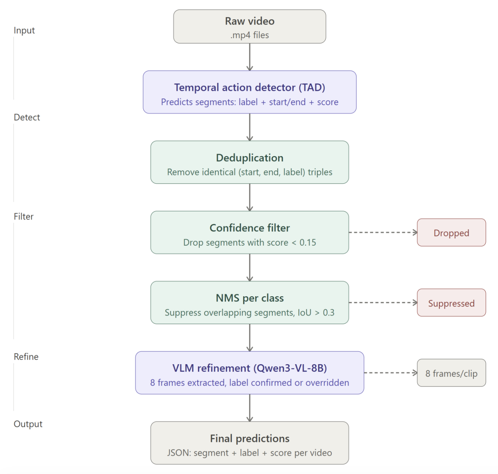
Figure 1. Hybrid pipeline. A raw video flows top-to-bottom through detection (TAD), three filtering steps (deduplication, confidence filter, per-class NMS), and VLM refinement, yielding a final JSON timeline. Dashed branches show segments that are dropped or suppressed along the way.Using the CLIP features described above, ActionFormer produces a ranked list of candidate segments, each characterised by a start time, end time, predicted action label, and confidence score. The raw output is intentionally noisy: the detector over-proposes to maximise recall, so two filtering steps are applied before any VLM inference:
Watch_TV and Eat_Snack, so cross-class
suppression would incorrectly remove valid detections.For each surviving proposal, the pipeline extracts 8 uniformly sampled frames from the corresponding video interval and constructs a structured prompt. The prompt grounds the VLM to the specific time window and provides the full 51-class TSU ontology, instructing it to return a single JSON object with a label and a confidence score. The TAD prediction is included as a hint and the VLM is asked to confirm or override it based on visual evidence. This framing keeps the VLM's role to be a semantic verifier, not a temporal reasoner.
Responses are parsed with a fuzzy label resolver that normalises punctuation and casing differences and applies whole-token boundary matching to map VLM outputs back to canonical TSU class names. When resolution fails, the original TAD label is preserved as a fallback, ensuring no segment is silently dropped due to an unparseable response.
Labeled segments are sorted chronologically and a second round of per-class NMS (IoU > 0.3) is applied to the final output, removing any duplicates introduced by the VLM relabeling step. The result is a clean, ordered timeline of (start, end, label) triples for each video, directly comparable to TSU ground truth (GT) annotations.
We use the TSU Cross-Subject (CS) protocol, subjects are disjoint between train and test, so no person appears in both. The full CS test split contains 187 videos; for tractability we evaluate on a subset of 86 videos drawn from it, still covering 7 unique human subjects and 7 camera angles. This subset contains 6,731 annotated actions spanning 17 distinct task scenarios, with an average video duration of 16.9 minutes.
The evaluation subset has a significant class imbalance, which is representative of real domestic environments: a few high-frequency actions dominate while many task-specific actions appear rarely.
| Top 5 Most Frequent Actions | |
|---|---|
| Walk | 955 |
| Take_Something_Off_Table | 954 |
| Put_Something_On_Table | 944 |
| Drink_From_Cup | 445 |
| Get_Up | 344 |
| Bottom 5 Least Frequent Actions | |
|---|---|
| Drink_From_Glass | 10 |
| Breakfast_Take_Ham | 6 |
| Breakfast | 5 |
| Get_Water | 4 |
| Insert_Tea_Bag | 2 |
The frequency gap between the most common action (Walk, 955) and the rarest (Insert_Tea_Bag, 2) poses a substantial challenge, as tail-class actions are underrepresented during training and harder to recognize from sparse visual cues.
GT annotations and model predictions operate at very different densities, so a predicted
sequence can be several times longer than the ground truth without being wrong. This rules
out exact match (demands identical length, scores near zero on every video) and edit distance
(charges a unit cost for each extra Watch_TV the annotator skipped, conflating
being more thorough with being wrong). We use the
Longest Common Subsequence (LCS) instead: it captures the largest set of GT
actions appearing in the predicted sequence in the correct chronological order, ignoring
insertions. Formally:
$\text{LCS Recall} = \dfrac{|\text{LCS}(\text{GT}, \text{Pred})|}{|\text{GT}|} \times 100$
This is insertion-insensitive (extra predictions are skipped, not penalised), order-sensitive (correct labels in the wrong order are penalised), and applies identically to TAD, VLM, and Hybrid output without requiring timestamp alignment. We also report LCS Precision ($|\text{LCS}|/|\text{Pred}|$) and their harmonic F1 to prevent a trivially dense system from scoring well on recall alone.
Because the three systems operate at fundamentally different prediction densities, we report LCS Recall, LCS Precision, and their harmonic mean F1 as a unified evaluation framework, plus segment-level mAP at IoU 0.1/0.3/0.5 for the systems whose detections carry confidence scores. The VLM emits no confidence scores, so it cannot be ranked into the same mAP pipeline. We report a separately-computed diagnostic mAP for it.
| Method | Type | LCS Recall (%) | LCS Precision (%) | LCS F1 (%) | mAP@0.1 | mAP@0.3 | mAP@0.5 |
|---|---|---|---|---|---|---|---|
| ActionFormer | TAD Baseline | 72.5 | 26.8 | 36.6 | 22.07 | 17.82 | 13.05 |
| Qwen3-VL-8B | VLM Baseline | 22.3 | 59.5 | 30.9 | 2.13 | 1.42 | 0.78 |
| Hybrid | TAD + VLM | 52.0 | 30.7 | 36.2 | 12.7 | 8.5 | 5.9 |
The full training configuration is described in the Method section. Here we report what the trained detector actually does. First, the loss curves confirm the run behaved as expected.
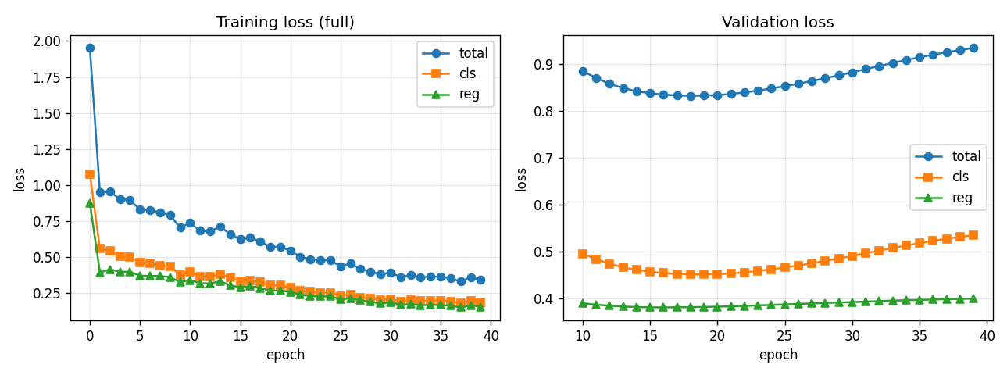
Figure 2. Training and validation loss curves for ActionFormer on the TSU Cross-Subject split. Training loss decreases monotonically over 40 epochs. Validation loss reaches its minimum around epoch 20 and increases afterwards, which is the standard signature of mild overfitting on a single subject validation set. The checkpoint selected for evaluation is the best validation loss checkpoint, near epoch 20.At test time the trained model produces a very dense set of candidate segments. Across the 86 videos of the evaluation subset, ActionFormer outputs roughly 82,000 raw detections before any cleanup, against approximately 6,700 ground truth segments. This 12 to 1 prediction to GT ratio is intentional, since the detector over-proposes to maximise recall, but it has two consequences that we control for in the evaluation. First, the score distribution is heavily skewed toward low confidence proposals, so a confidence cut-off is necessary. Second, ActionFormer fires multiple overlapping segments for the same true action, so per class Non-Maximum Suppression is necessary as well.
To make the TAD numbers directly comparable to the Hybrid pipeline, we apply the exact same prefilter the Hybrid pipeline uses before invoking the VLM. The three steps are deduplication of identical detections, a confidence threshold of 0.15, and per class temporal NMS at IoU 0.3. This brings the prediction density of the TAD output in line with what the VLM actually sees inside the Hybrid pipeline, so that any performance difference between the two pipelines reflects the VLM relabelling step rather than a difference in candidate density.
We score the TAD baseline on the 86-video evaluation subset after the matched prefilter described above. It reaches LCS Recall 72.5%, Precision 26.8% and F1 36.6%, with segment-level mAP of 22.07 / 17.82 / 13.05 at IoU 0.1 / 0.3 / 0.5 (the full three-system comparison is the headline results table in the Evaluation Setup section).
Compared to the Hybrid pipeline (Recall 52.0, Precision 30.7, F1 36.2), TAD recovers substantially more ground truth actions (Recall +20.5) while being less selective in its predictions (Precision -3.9). The F1 score is essentially tied (TAD 36.6 vs Hybrid 36.2), which means that on average the VLM relabelling stage redistributes performance from precision to recall rather than improving total sequence quality.
Across the 7 unseen test subjects, F1 varies by only ~12 points and no subject collapses (high recall, low precision everywhere), so the detector generalises across people rather than memorising specific training subjects. The per-subject breakdown (Figure 14) is deferred to the Appendix.
Beyond sequence level LCS, we report per class Average Precision at IoU 0.5 to measure how well the TAD baseline localises each action with strict temporal alignment.
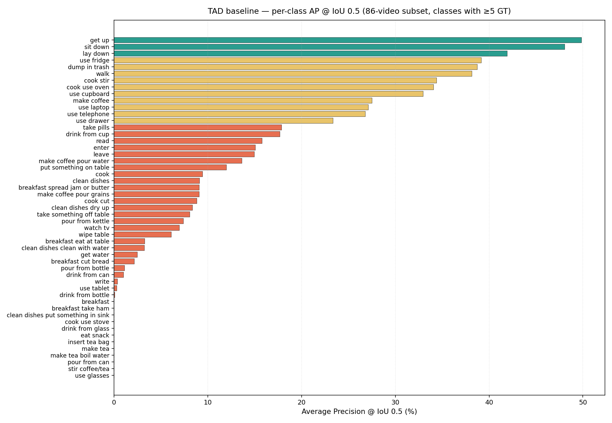
Figure 3. TAD baseline per class Average Precision at IoU 0.5 on the 86 video subset, covering all 51 TSU classes and sorted by descending AP. Green bars are above 40 %, yellow bars between 20 and 40 %, red bars below 20 %, grey bars are exactly zero.The chart shows a three tier structure. A small head of visually distinctive actions (clear postural changes or specific appliance interactions) crosses 30 % AP, a middle tier of visually generic or transitional actions sits between 20 and 40 %, and a long tail of rare fine grained sub-actions collapses to zero. The residual error budget is therefore concentrated in a predictable subset of rare and fine grained classes rather than distributed uniformly across the ontology.
TAD recall does not degrade with video length: regressed against the number of ground-truth actions per video it is essentially flat (slope −0.004, Pearson r = −0.01), so the structural backbone is robust to long videos and the per-video variance is driven by which classes a video contains rather than by how long it is (scatter plot, Figure 15, in the Appendix).
The VLM setup (Qwen3-VL-8B, one-minute windows of 35 frames, JSON-timeline prompting with a frame map) is described in the Method section. We evaluate on the same 86 Cross-Subject test videos (7 unseen subjects) used for the ActionFormer baseline and the Hybrid pipeline, for direct comparability.
To test whether the model performs genuine temporal reasoning or merely exploits static cues, we built a diagnostic Q&A benchmark on 5 high-density videos (~15 auto-generated questions each, spanning ordering, counting, and duration comparison), answered under three conditions: normal frames, shuffled frames, and blind inference with no video. The pattern is clear and consistent: answers are identical for normal and shuffled frames, confirming the model does not use temporal order from the visual input, and the blind condition sometimes scores highest, revealing reliance on language priors over visual evidence rather than genuine temporal reasoning.
Beyond Q&A, the core task is full timeline reconstruction on the 86 test videos, evaluated via LCS (ordering quality), event-mAP (localisation precision), and per-class and per-duration recall (detection coverage).
LCS and mAP: The headline LCS results show a strong asymmetry: precision is relatively high (59.5%) while recall is low (22.3%), giving an F1 of 30.9%. This means the model's predictions, when correct, tend to appear in the right order, but it only recovers roughly one in four ground truth activities. Event-mAP is very low across all thresholds (2.13% at IoU 0.1, 1.42% at IoU 0.3, 0.78% at IoU 0.5), reflecting the model's inability to produce precisely localised segments, as expected from a system sampling one frame every 1.7 seconds. The hallucination rate is 52%, meaning about half of all predicted segments have no matching ground truth. The most frequently hallucinated classes are Walk, Drink_From_Cup, and Get_Up, which are common daily activities the model tends to over-predict even when absent.
| Metric | Value |
|---|---|
| LCS Recall | 22.3% |
| LCS Precision | 59.5% |
| LCS F1 | 30.9% |
| Mean recall (per class) | 6.9% |
| mAP @ IoU 0.1 / 0.3 / 0.5 | 2.13% / 1.42% / 0.78% |
| Hallucination rate | 52.2% |
One of the most informative findings concerns the relationship between event duration and detection rate. Events shorter than 2 seconds are essentially invisible to the model: recall is 0.4% for sub-1s events and 1.1% for 1–2s events. Detection only becomes meaningful for events longer than 30 seconds, which reach 53.3% recall. This is a direct and expected consequence of the 1.7-second inter-frame interval: a median-length event of 1.76 seconds is captured by at most one frame, making reliable detection impossible regardless of the model's semantic capabilities.
Read, Use_Laptop) score highest; short, transient ones score near zero.
The two charts are complementary: the duration chart explains why recall is low overall, while the per-class chart shows which activities are affected: classes like Read and Use_Laptop (long-duration activities) score highest, while Sit_Down and Take_Something_Off_Table (short and transient) score near zero.
These resolution limits are not addressable through prompting alone, which is precisely what motivates the hybrid pipeline below; we return to the VLM's standalone strengths and weaknesses in the overall Conclusion.
We first examine a representative example to build intuition for what the evaluation measures and why standard metrics alone are insufficient. The figure below shows the action timeline for video P16T08C02, a 20.5-minute recording from the TSU dataset. The three rows correspond to the ground truth annotations and the predictions of our two systems. Even without reading the numbers, the structural asymmetry between the three systems is immediately apparent.
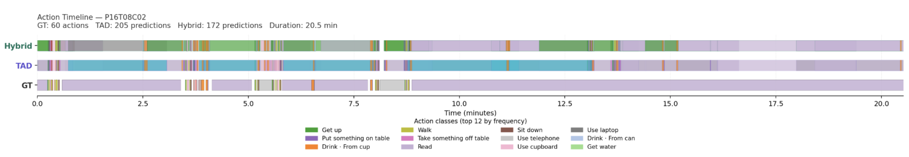
Figure 7. Action timeline for video P16T08C02 (20.5 min). Each row is a sequence of colour-coded action segments: ground truth (GT, 60 actions), the TAD baseline (205 predictions), and the Hybrid pipeline (172 predictions). The denser, larger-block TAD row and the sparser GT row make the density mismatch immediately visible.
The GT contains 60 sparsely distributed annotations logged by a human annotator.
TAD produces 205 predictions across the same duration, and the Hybrid pipeline keeps 172.
Human annotators on TSU record salient, active interactions such as Get_Up,
Drink_From_Cup, or Take_Something_Off_Table, while omitting
passive background states that persist between them. Both TAD and the VLM, by contrast,
actively identify and label these intermediate states (Watch_TV,
Sit_Down, Use_Laptop) because they are visually present
throughout the video. This asymmetry is structural rather than a failure of either system, and it
is the primary reason why evaluation metrics must be chosen carefully.
Looking at the TAD row, several large monolithic blocks are visible, most notably the extended teal segment spanning roughly minutes 1 through 8. This corresponds to a single label held across a long continuous duration, a pattern that has no equivalent in the ground truth. This reveals a core limitation of the TAD baseline: even when the predicted label is semantically correct, the temporal boundaries are too imprecise to constitute a meaningful localisation. This explains the low mAP scores we report in the table below, at IoU 0.5, a segment that covers the right action but spans three times the annotated duration scores zero, regardless of label correctness. TAD’s high LCS Recall is partly an artifact of this over-extension: a long predicted segment overlapping several GT actions allows the LCS algorithm to match many ground truth actions against a single prediction, inflating recall without reflecting genuine temporal understanding.
The Hybrid row is visibly more fragmented and colour-diverse than TAD, indicating that the VLM actively relabels and subdivides the large TAD segments into shorter, more varied predictions. This is reflected in the improved precision of the Hybrid system, fewer predictions are wasted. However, the Hybrid row remains substantially denser than the ground truth, particularly in the second half of the video (minutes 10–20), where the ground truth records a single long passive state while both systems continue predicting activity. This confirms the central finding of our qualitative analysis: the VLM, influenced by the TAD segmentation, identifies more activity threads than the human annotator logged, which is not strictly wrong, but cannot be rewarded by a metric anchored to sparse human annotations.
The results reveal that TAD and the Hybrid pipeline do not represent a strict performance ordering, they make fundamentally different trade-offs. TAD achieves the highest LCS Recall but the lowest Precision, meaning it recovers most GT actions through sheer prediction volume rather than targeted localisation. The Hybrid pipeline sacrifices recall (52.0%) in exchange for higher precision (30.7%), as the VLM filtering removes many of the redundant TAD predictions. The LCS F1 scores are nearly identical, confirming that the harmonic mean correctly normalises for the density difference and reveals the two systems to be roughly equivalent in overall sequence recovery quality. The Hybrid pipeline therefore redistributes performance relative to TAD rather than improving or degrading it.
The segment-level mAP scores are low across both systems (TAD: 13.05%, Hybrid: 5.9% at IoU 0.5), reflecting the temporal boundary imprecision illustrated in the qualitative example. These numbers are not directly comparable to prior TSU work such as PDAN (32.7% frame-mAP), which uses a different and more lenient evaluation protocol. They do, however, confirm that neither system achieves reliable temporal localisation under strict overlap criteria, and motivate future work on boundary refinement.
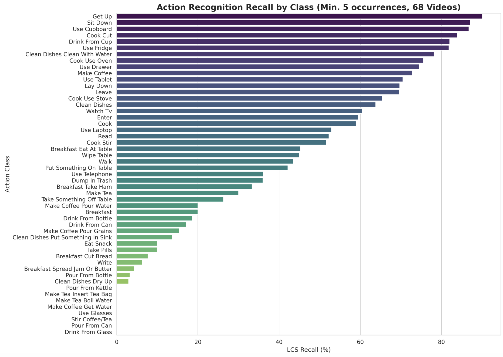
Figure 8. LCS Recall per action class (classes with ≥5 occurrences, 86 videos), sorted descending. Computed via LCS traceback to identify exactly which ground-truth actions were matched.
Recall is highest (above 80%) for visually unambiguous, spatially distinctive actions
(Get_Up, Sit_Down, Use_Cupboard,
Cook_Cut, Drink_From_Cup, Use_Fridge) whose
clear postural changes and appliance interactions produce consistent visual signatures across
subjects and camera angles, suggesting the pipeline genuinely learned them. A middle tier
(40–65%: Watch_TV, Cook, Enter,
Use_Laptop, Read) is common but visually ambiguous, consisting of
background or transitional states that lack precise boundaries. Walk
and Put_Something_On_Table also land here despite being among the three most frequent
classes, which suggests visual distinctiveness matters more than training-signal volume.
Recall then collapses for two reasons. First, many low-scoring classes are fine-grained
sub-actions (Drink_From_Bottle (18%) versus Drink_From_Cup, or
Make_Coffee_Pour_Water versus Make_Coffee) where the pipeline
predicts the parent class and scores zero under exact label matching. Second, brief
interactions like Write (7%) or Pour_From_Bottle occupy short
temporal windows that TAD’s sliding-window detector systematically misses or merges into
adjacent segments. At the very bottom, rare sub-actions such as Pour_From_Kettle,
Make_Tea_Boil_Water, Use_Glasses and Drink_From_Glass
score exactly 0%: they appear so infrequently in training that neither ActionFormer nor the VLM
has a basis to detect them. The failure is thus concentrated in a predictable subset of rare,
fine-grained classes rather than spread uniformly across the ontology.
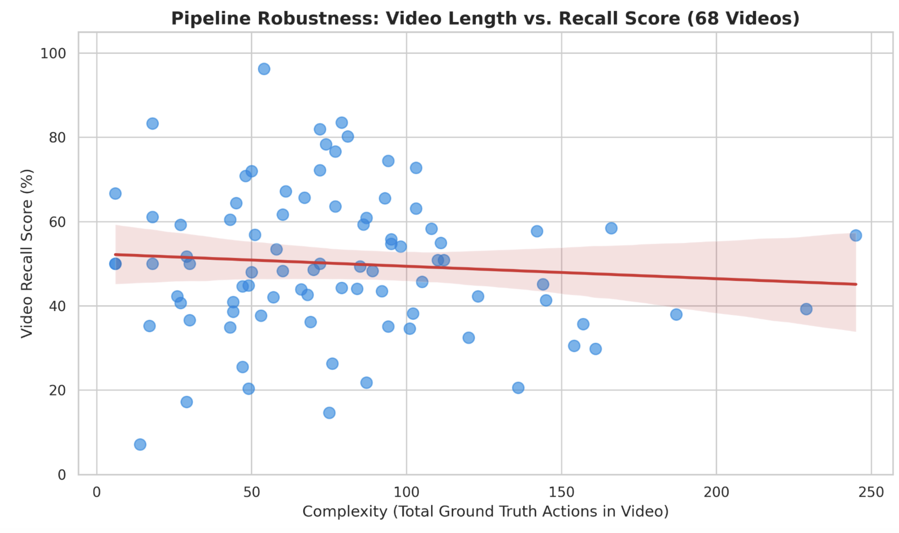
Figure 9. Hybrid pipeline LCS Recall vs. video complexity (total ground-truth actions per video) across 86 videos. The regression line (red) shows a mild negative trend, but the wide confidence band and high scatter indicate complexity is a weak predictor of recall.The Hybrid pipeline shows a mild negative trend with video complexity (Pearson r = −0.28, p < 0.05), but the effect is small: a video with 200 GT actions scores only 5–8 points lower than one with 50, and the scatter within complexity bins dwarfs the trend. A video's recall is more predictable from which classes it contains than from how long it is. A short video dominated by fine-grained sub-actions scores near 10%, while one dominated by visually distinctive classes scores near 90%. Future work should therefore target rare-class detection rather than shorter videos.
The TAD baseline is the strongest single component of the pipeline in F1 terms (36.6 vs 36.2 for Hybrid on the 86 video subset). Its strength is recall, since the detector is deliberately dense and rarely misses a salient action. Its weakness is precision, since the same density floods the timeline with redundant proposals. The Hybrid pipeline addresses the precision weakness at the cost of part of the recall strength, the VLM stage cleans up many false positives (precision plus 3.9) but loses fine grained recall (recall minus 20.5), because it does not reliably distinguish look alike sub-actions like Cook_Stir, Cook_Use_Oven and Cook_Use_Stove from their parent super-class Cook. The net F1 outcome is essentially a tie, with the per video distribution showing 48 wins for TAD, 35 for Hybrid and 3 ties out of 86, depending on whether the video is dominated by fine grained or by visually generic classes.
The VLM baseline, considered on its own, shows a two-sided picture. Its high LCS precision indicates genuine semantic understanding of activity sequences at a coarse level, and long-duration activities are reliably detected, all without any task-specific training. But it is fundamentally constrained by temporal resolution: the 1.7-second sampling interval makes short events structurally undetectable, its localization is imprecise, and the Q&A experiments show it does not exploit frame order at all, relying instead on static appearance and language priors.
Two specific limitations of the TAD side stand out and motivate concrete next steps. First, the TAD pipeline still produces a number of over-extended segments that survive the matched prefilter. The Appendix example on P20T16C03 illustrates this, on rows like Cook both TAD and Hybrid hold a single label for several minutes while the ground truth alternates more rapidly, which costs mAP at IoU 0.5 even when the label itself is correct. A natural next step is to refine boundaries through a small auxiliary head or a learned post-processing stage, decoupling segment proposal from boundary regression. Second, the per class analysis localises the residual error budget to a predictable subset of rare and fine grained sub-actions (Insert_Tea_Bag, Drink_From_Glass, Pour_From_Can, Make_Tea_Boil_Water) that the model never had enough signal to learn. A targeted oversampling strategy, or a class balanced loss on these tail categories, is the most direct route to lifting both the LCS and the mAP numbers.
These analyses extend the core results: per-video win/loss case studies for the TAD vs. Hybrid comparison (with source videos), and the finer-grained VLM diagnostics.
The overall gap of plus 20.5 recall and minus 3.9 precision between TAD and Hybrid, averaged across the 86 evaluation videos, is not a uniform shift applied to every video. It is the average of two opposite per video regimes that cancel out in F1. The VLM relabelling stage performs one consistent operation in every video it touches, namely it replaces a TAD label with what it judges from a short clip of frames around the segment. The same operation has opposite effects depending on the type of label it is acting on. When the original TAD prediction belongs to a visually distinct category that the VLM can reject from a few frames, the operation removes a false positive and lifts precision. When the original TAD prediction belongs to a family of look alike sub-actions that the VLM cannot reliably tell apart in a short clip, the operation merges the sub-action into its parent and lowers recall. Across the dataset the two effects are roughly balanced, with 48 videos resolving in favour of TAD, 35 in favour of Hybrid, and 3 ties. This is why the overall F1 numbers (36.6 for TAD versus 36.2 for Hybrid) land within one point of each other while the recall and precision columns differ by tens of points. On average the Hybrid pipeline does not degrade the TAD baseline; instead it shifts the error budget from precision to recall, and the dataset itself determines on which side any given video lands.
To make the two regimes concrete, we pick one video from the TAD-win side and one from the Hybrid-win side and look at their full timelines.
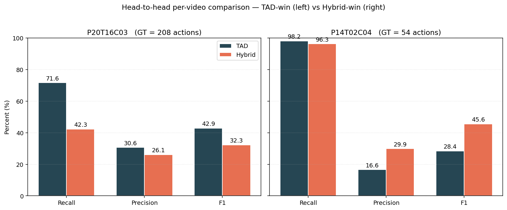
Figure 10. Per video head to head on the two showcase examples. Left, P20T16C03 (208 ground truth actions, kitchen routine). TAD F1 42.9 vs Hybrid F1 32.3. Right, P14T02C04 (54 ground truth actions, low activity living room scene). TAD F1 28.4 vs Hybrid F1 45.6.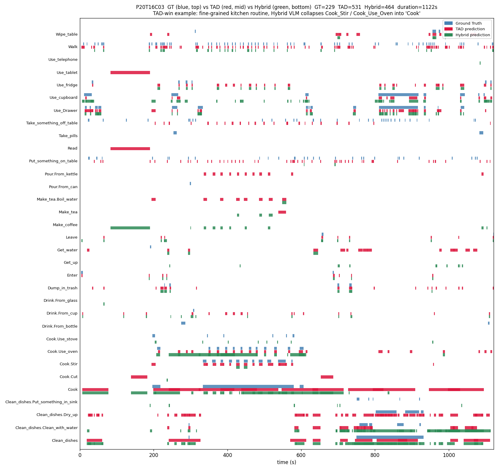
Figure 11. Per-class timeline for the TAD-win example P20T16C03 (about 19 minutes). Each horizontal row is one TSU action class. Within each row, the top sub-bar in blue is the ground truth, the middle sub-bar in red is the TAD baseline, the bottom sub-bar in green is the Hybrid pipeline. On the Cook_Stir and Cook_Use_Oven rows, the red TAD bars track the blue ground truth between minutes 4 and 10, while the green Hybrid bars disappear after minute 8 and instead fill the parent Cook row.Reading the Gantt row by row, the TAD-win pattern is visible in two specific places. On the Cook_Use_Oven row, blue ground truth fires intermittently between minutes 4 and 10, and the red TAD bars follow the same rhythm in the middle sub-bar. The green Hybrid bars are present only in the first half of that window and disappear after minute 8, because the VLM merged the rest of those intervals into the parent class Cook, where both red and green now span almost the entire timeline even though blue only appears between minutes 3 and 10. The Cook_Stir row shows the same vertical alignment, blue and red follow each other while green is intermittent. The TAD baseline therefore covers three distinct fine grained labels (Cook, Cook_Stir, Cook_Use_Oven) where the Hybrid pipeline reduces them to mainly one (Cook). Several other rows also show all three pipelines hallucinating together (Make_Coffee, Make_Tea and Pour_From_Kettle have heavy red and green bars but no blue bar at all), which means the VLM does not catch every TAD hallucination either. The net effect of the row level comparison is that TAD recovers more fine grained vocabulary across the timeline, which the LCS metric rewards, hence TAD F1 42.9 vs Hybrid F1 32.3 on this video.
P20T16C03 is a continuous meal-preparation routine. The person spends a long uninterrupted block of time in the cooking area, alternating quickly between stirring food in a pot, opening the oven to check it, and operating the stove, with brief excursions to fetch ingredients from a drawer or the fridge. From the perspective of the Hybrid pipeline, the VLM is asked to label short eight-frame clips inside this block. In a short clip, Cook_Stir, Cook_Use_Oven and Cook_Use_Stove look almost identical, hands near a hot surface in a kitchen, no large body posture change, very similar background. The VLM defaults to the safer parent category Cook, which is correct as a coarse label but invisible to the LCS metric that scores fine grained classes. The TAD baseline, by contrast, sees the full 19-minute feature sequence at once, so it can use the periodic temporal pattern of stirring intervals to disambiguate the three sub-actions. This is the regime in which the structural backbone has a real advantage and the per-clip VLM cannot match it.
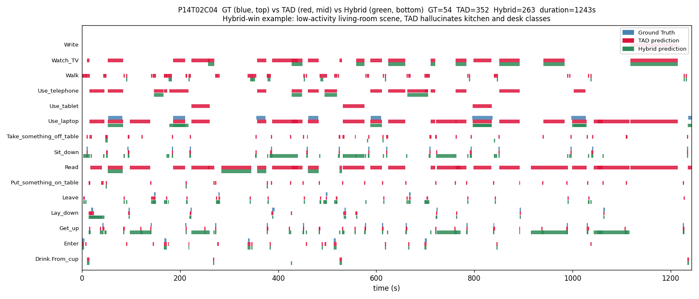
Figure 12. Per-class timeline for the Hybrid-win example P14T02C04 (about 21 minutes). Same layout, blue is ground truth, red is TAD, green is Hybrid. Rows such as Watch_TV, Read, Use_Telephone and Use_Tablet contain heavy red bars and no blue bars at all, which means TAD predicted these actions across the whole video even though they never appear in the ground truth. The Hybrid VLM correctly rejects most of these hallucinations and is visually concentrated on the rows that the ground truth actually occupies, namely Use_Laptop, Sit_Down, Get_Up, Lay_Down, Leave and Enter.Reading the Gantt row by row, the Hybrid-win pattern is even more visually direct. Four entire rows contain red bars across the whole video and zero blue bars at all, Watch_TV, Read, Use_Telephone and Use_Tablet. These four classes never appear in the ground truth. The Hybrid pipeline removes all of them on three rows (the green sub-bar is completely empty on Read, Use_Telephone and Use_Tablet) and most of them on the fourth (Watch_TV keeps only a small green block near the end). On the rows that the ground truth actually contains (Use_Laptop, Sit_Down, Get_Up, Lay_Down, Leave, Enter), the green sub-bar follows the blue sub-bar more closely than the red sub-bar does, and stays empty where blue is empty. The Hybrid pipeline is therefore closer to the ground truth on this video on both axes, by suppressing four full rows of hallucinations and by tracking the activity better on the rows that matter, hence Hybrid F1 45.6 vs TAD F1 28.4.
P14T02C04 is a low-activity living-room scene. The person spends most of the 21 minutes either sitting on a sofa with a laptop or lying down on the same sofa, with a handful of short transitions when they get up, leave the room and come back. There is no kitchen vocabulary, no desk vocabulary, no tableware. From the perspective of the Hybrid pipeline, the VLM has an easy job because the scene is visually unambiguous, eight frames of a person on a sofa with a laptop are enough to confidently reject Watch_TV, Read, Use_Telephone, Use_Tablet and Drink_From_Cup. The TAD baseline, by contrast, operates only on CLIP features and has no scene-level veto. When it sees a person sitting with an object in hand, it falls back to its most frequent training-time classes, which are exactly Drink_From_Cup and Watch_TV, and fires them across the whole video. This is the regime in which the structural backbone systematically over-predicts and the per-clip VLM is the correct semantic filter.
Beyond missed detections, the substitution analysis reveals systematic semantic confusions. For instance, Read is predicted 25 times in place of Watch_TV, and Use_Tablet is predicted 18 times in place of Watch_TV, suggesting the model confuses visually similar stationary postures. Walk is the most over-predicted class overall, appearing in 15% of all hallucinations, likely because transitions between activities are common and the model defaults to locomotion as a filler.
The figures and table below support the main-text TAD results: the raw inference distribution, the per-subject breakdown, the recall-vs-complexity scatter, and the full training configuration.
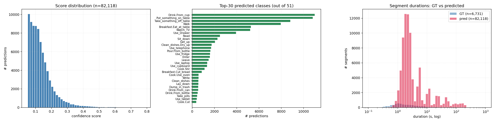
Figure 13. Three views of the raw inference output on the 86 video evaluation subset. Left, score distribution skewed toward low confidence values. Middle, top 30 predicted classes among the 51 in the ontology, dominated by Drink_From_Cup, Put_Something_On_Table and Take_Something_Off_Table. Right, predicted and ground truth segment durations both cluster in the one to ten second range, but predictions outnumber ground truth by roughly twelve to one, which drives the dense over-firing pattern seen in the per video timelines.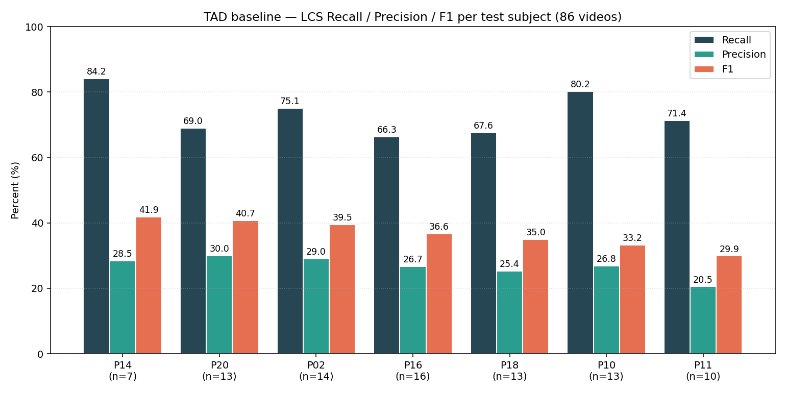
Figure 14. TAD baseline LCS Recall, Precision and F1 per test subject. Bars are sorted by F1. The strongest subject (P14) reaches F1 41.9, the weakest (P11) reaches F1 29.9. Recall stays in the 66 to 84 range across all seven subjects and precision stays in the 20 to 30 range, which mirrors the global high-recall and low-precision pattern.The TAD baseline behaves consistently across subjects: F1 varies by roughly 12 points between the strongest and weakest subject, but the qualitative picture (high recall, low precision) is the same everywhere, and no subject is catastrophically below the others, suggesting the detector generalises across people rather than memorising specific training subjects. The VLM baseline shows the same stability: its LCS F1 is relatively consistent across the 7 test subjects (range 28.1%–35.0%), so its performance is not strongly dependent on individual subjects or their specific activity patterns.
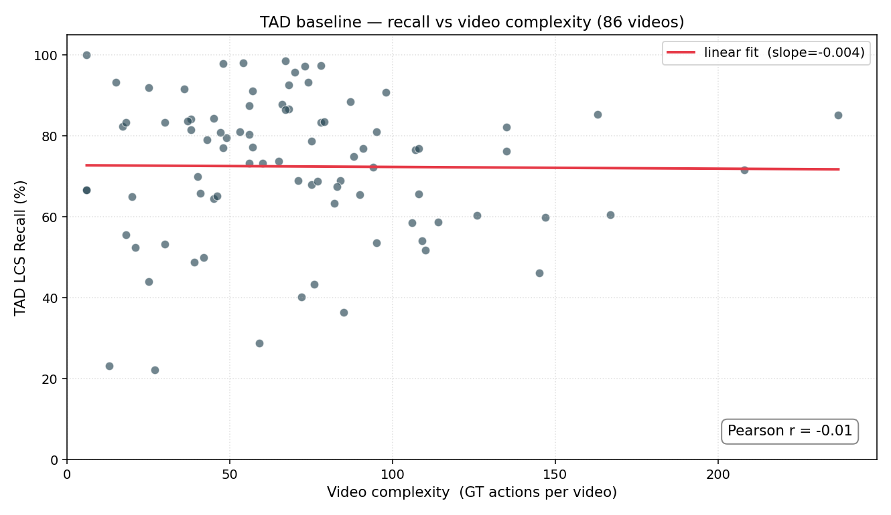
Figure 15. TAD baseline LCS Recall plotted against video complexity (number of ground truth actions per video) on the 86 video subset. The red regression line is essentially flat (slope -0.004) and the Pearson correlation is r = -0.01, statistically indistinguishable from zero.| Setting | Value |
|---|---|
| Training videos | 315 (10 subjects, P03–P19) |
| Validation videos | 36 (held-out subject P25) |
| Hardware | 2× NVIDIA V100 |
| Epochs | 40 |
| Optimiser | AdamW, lr 1e-4, weight decay 0.05 |
| Schedule | 3-epoch linear warmup + cosine annealing |
| Regularisation | gradient clip 1.0, mixed precision, EMA |
| Checkpoint | best validation loss (~epoch 20) |